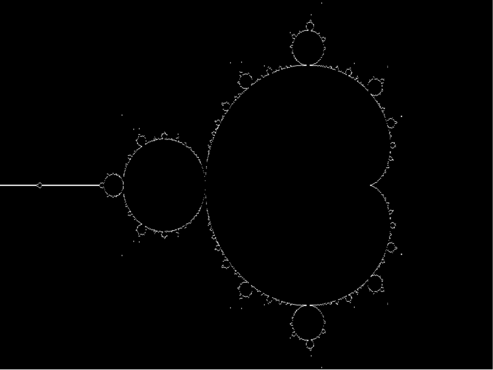
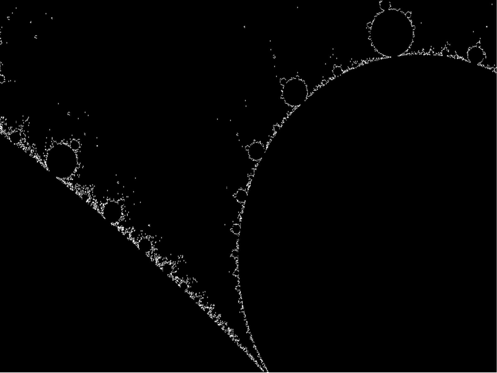
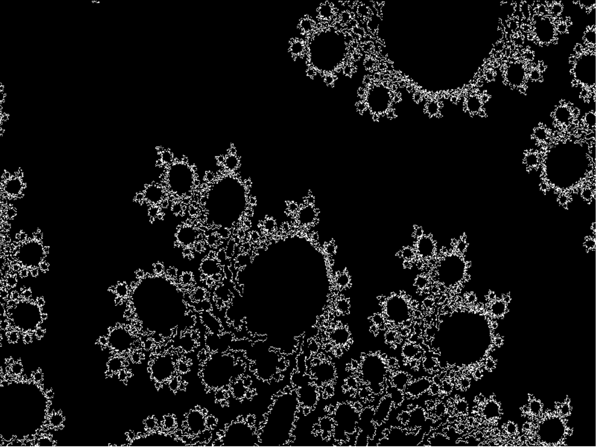
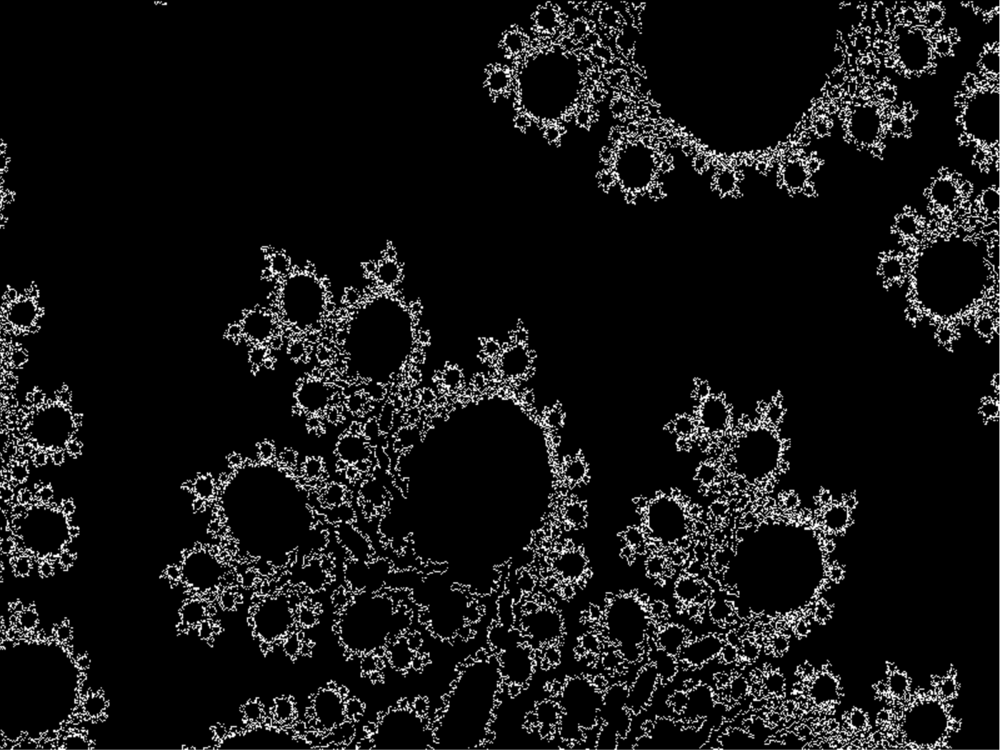
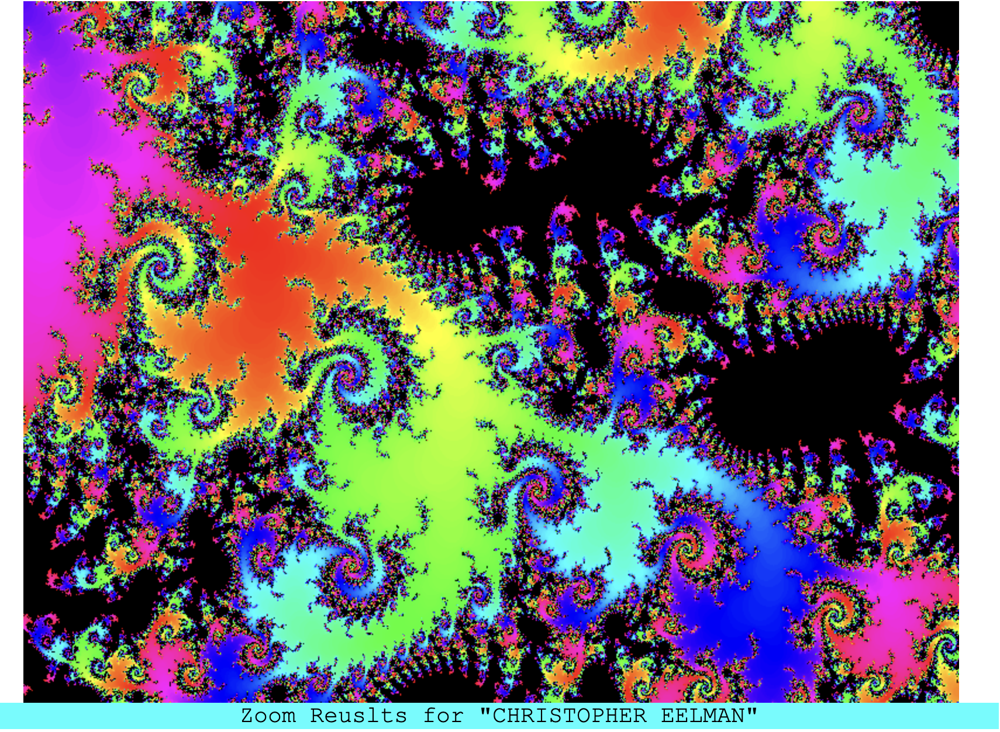

But… I customized this program and added features to make my geometry project unique. The first thing I added was the random zoom button. This is a way for the program to keep zooming in on an interesting section of the Mandelbrot set and not eventually be all black. As you know the borders of the Mandelbrot set is where interesting fractal patterns are. To do this I took all the pixels being displayed on the 800 by 600 pixel output and checked first if an induvidual pixel is in he Mandelbrot set, and then if the next one is not in the Mandelbrot set, that point is a border point. There is then a list of all the border points currently. When displayed in white, the border points look like this:
 
 

The program then selects a random point out of those white points and zooms in on it. Remember, those white border points are where the interesting stuff happens. By repeating this process it creates a completely unique interesting zoom every time. And after 7 zooms (or even less), it is basically guaranteed that no-one else has zoomed into that part of the Mandelbrot set before.
To go further with customization, I then added a feature that will zoom in on a point based on text that you enter. For example, if I enter in my name, “Christopher Eelman”, It will zoom to a specific point, a specific amount of times based on the amount of characters you enter and always produce the same image. Try it for yourself! Enter in "Christopher Eelman", and you will get the same exact image below: 
To generate coordinates from text, I first need to create a hash from the text. I first assign each letter to a prime number (A = 2, B = 3, C = 5, … X = 97, Y = 101, Z = 103). Then I take the value of the first letter, and then for each consecutive letter, I multiply by the character value and the position in the text (For the word DOG, D=1, O=2, G=3). For example, the text “CHRIS” produces the hash 2665251960, I then break the digits up by threes, my first X zoom coordinate will be 266 and my first Y coordinate will be 525. I then repeat and use the rest of the digits to get the next zoom coordinates. As you can see the more characters, the more digits, and the more coordinates you can get to zoom. I used prime numbers, being unique numbers, because multiplication of them always produces a different hash value. Got some information about this from https://stackoverflow.com/questions/41399371/generate-random-numbers-that-depend-on-string-hash
By entering in the same text / name, you will zoom into the same exact part of the Mandelbrot set every time, claiming that spot as yours! It is fun to see which text yields which results, you can play around with it for hours. When your done, you can then download one of the images you created, print it, or share it with others.